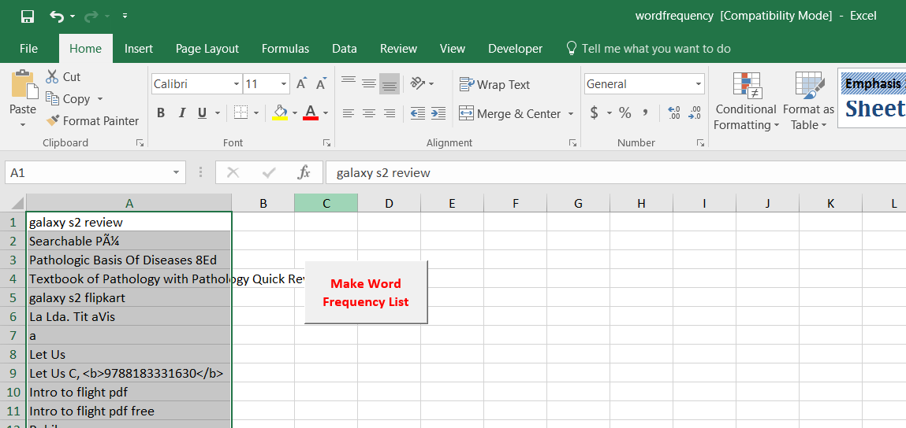
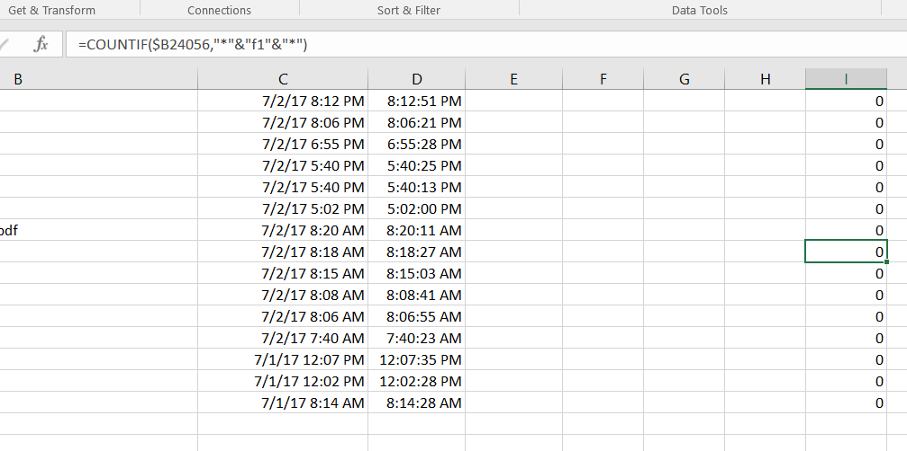

We begin our journey by obtaining our google search data. This can be found over here. Make sure you are logged in to your personal gmail account as your iimu account will not let you download your search history and it probably hasn't accumulated as many searches anyway. Select only the "Searches" data as shown below and click "Next" and "Create archive". It may take a minute or two for google to prepare the archives for download.
Once you extract the zip file, you will find some .json files inside the "Searches" subdirectory. Before we begin our analysis, we must decide on what tools we are to use. In this tutorial, we will use excel/libreoffice. If you are more comfortable with python or r or any other tool, you may follow along using those softwares.
Excel cannot import json files directly. We must first convert our Json files to a supported format like csv (Comma-Separated Values). This website allows us to easily convert json files to csv format. Open the first Json file in notepad and paste it's contents into the text box as shown below. Be sure to download the csv file and clear the text box before pasting the contents of the next json file.
Open the first of the csv files with excel or libreoffice calc and click ok on the import dialog. You should see a list of timestamps and search strings as shown below.
Now open up the next csv file and copy all of the timestamp and search data below the first one. Ensure you do not copy the first row and only copy the data. Repeat for all the csv files. Some of the search queries may have a second or third timestamp, those extra timestamps may be safely deleted. At the end you should have only 2 columns. You can download my excel file here for reference. For obvious reasons, my search strings have been removed from the file.
Before proceeding further, save the file as an excel workbook as a csv file cannot store excel functions. Go through the data quickly to remove any unwanted data like error messages in the place of timestamps. Some csv files may also end up with search strings in a third column and unnecessary duplicate timestamps in the second column. These must be fixed (ie. the duplicate timestamps removed and the search queries moved to the second column.)
When cleaning the data, it is useful to remember that ctrl+down arrow will move the selection to the next empty cell below and ctrl+shift+down arrow will select all cells from the current selection till the next empty cell below. Once you have finished cleaning the data it should be a long two column excel file with timestamps in column A and search strings in column B as shown below.
Now we have accumulated all of the data in one excel sheet. Lets begin with the timestamps (What's a timestamp?). These unix-microsecond timestamps need to be converted to excel timestamps so we use this formula =$A2/86400000000+25569+(5.5/24) in cell C2 for conversion and drag it by the bottom right handle to apply to the whole column. This can be made into a third column as shown below.
Now we have time expressed in excel time (days elapsed since 1-1-1900). This is not very intuitive to understand so let's go ahead and make it readable. Select all the cells in the column by clicking the column letter and right click -> format cells. Select a date type as shown below. (Make column C wider if you see "######")
So what can we do with time? First let's strip the dates and just get the times. So we just need the post decimal values of the dates column. Let's move to next column (column d as shown below) and put in the formula =C2-TRUNC(C2) in cell D2 and drag it all the way down to apply to the whole column. For readability, we can format it as shown below.
To find out at what times we are googling, we can create a histogram (what's a histogram?). In the next column (column E), we create half hour bins to split the times in. An easy way to create 48 bins ranging from 1/48 to 1 is to first fill F2 with 1 and F3 with 2. You can then select them both and drag the bottom right handle to make excel autofill numbers until 48. In E2 fill in =F2/48 and drag it down until you reach E49. Format the cells in column E with time the same way as column D. You should end up with bins as shown below.
To create a histogram, click on "data analysis" in the data menu and select "histogram" as shown below. In the next dialog box, select Input Range as all of the time stamps from column D and Bin Range as all of the bin values from column E. Check the chart output box as shown below and click "OK". You should get a chart plotting number of google searches against time as shown below.
So this shows essentially your eat-sleep times and the times that you spend the most online. If you had this information on your target demographic as a marketer, what could you do with it?
Next we're going to look at the search strings so go back to the previous worksheet by clicking the tab near the bottom. The words you search for the most can describe a lot about you. You can download an excel file here which contains a macro to list all the individual words and the number of times they occur. Open the wordfrequency.xls and enable macros. Go to the "Developer" menu and click on "Macro Security" and then "Enable all Macros" as shown below. Copy all of the search strings from your excel file to the wordfrequency.xls as shown below.

Now remove blank cells from the search string column. Press the "F5" key -> click "Special" -> select "blanks" -> Click "Delete Cells" in the "Home" menu.
Now click the "Make Word Frequency List" button to get a list of individual words and the number of times they were searched. Now you can sort the list in the frequency order by selecting "More Sort Options" from the drop down beside "All Words" and select "Descending (Z to Z) by Count of All Words" as shown below. Now if we ignore the usual english filler words like "as", "of", "the" etc, we can get a quick overview of our online persona Now if we ignore the usual english filler words like "as", "of", "the" etc, we can get a quick overview of our online persona.

Another interesting bit of information we can obtain from the data is the interest in a topic over time. For instance, I have recently gotten into watching formula 1 racing. You can follow along with something you are or were interested in. First let's begin with separating the times into bins. Monthly bins makes the most sense for my data but you can play around with bin sizes to find what works for your data. The bins can be created by first typing the earliest month in your search history (in my case 12/2012 as shown below). Then we can drag the handle at the bottom right corner of the cell to get bins for all the months until Aug 2017.
Next we have to search in each search string for the word "f1" and note down which bin it is in. To check whether a search string has the word "f1" in it, we use the function =COUNTIF($B2,"*"&"f1"&"*") in cell I2 and apply it to the full column as shown below. This will result in a 1 if the search string contains the word "f1" and 0 if it doesn't.

Next, we put the formula =I2*C2 in the cell J2 and extend it to the whole column as shown below. This gives us the value of the timestamp when we searched for "f1" or zero ( or 1/0/00 12:00AM) if we didn't.

Finally we can plot the frequency with the bins to get an interest over time graph. Select Histogram from the data analysis dialog box in the Data menu as before. Input range is All the data in column J and Bin Range is the months in column H as shown below. Click OK and we get a plot as shown below.

You will see that the first month has a very large frequency, this is because all the zeros from the J column ended up there. To remove this bias, we filter out the first month as shown below.
And that's it for this tutorial but definitely not all can be done with this data. We have only touched the tip of the iceberg of what can be derived from data. Come up with you own analysis and share with us your results and experiences at technalytics@iimu.ac.in